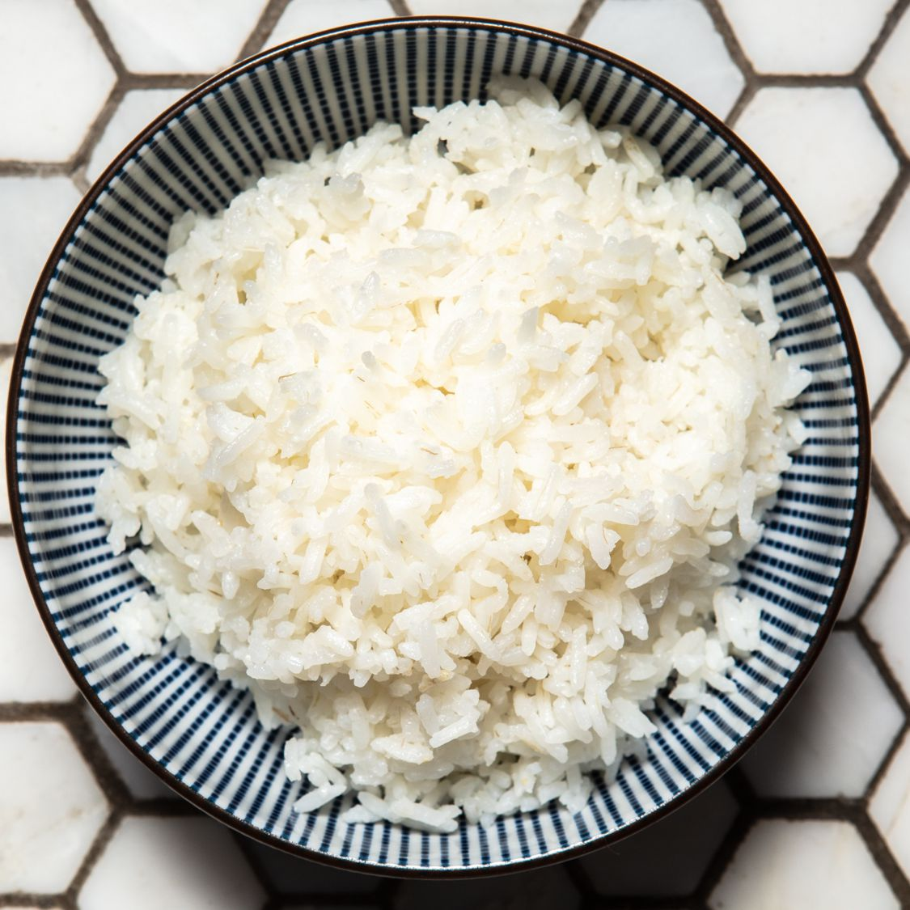

Perfect White Rice Recipe

A white canvas of white rice, waiting for you to add your favorite sides.
Tired of the old regular white rice? This recipe will show you how to make the PERFECT white rice.
Ingredients
- 2 teaspoons unsalted butter
- 1 cup uncooked long-grain white rice
- 2 cups water
- ½ teaspoon salt
- Melt butter in a medium saucepan over medium heat. Add rice and stir to coat. Cook until rice grains begin to turn opaque, 1 to 2 minutes; do not brown. Add water and salt.
- Bring to a boil; reduce heat to low. Cover and let simmer for 15 minutes. Do not lift the lid.
Remove from heat and let stand, covered, for 5 minutes. Fluff with a fork before serving.
Homepage - Mexican Scrambled Eggs - Hot Cakes - Perfect White Rice